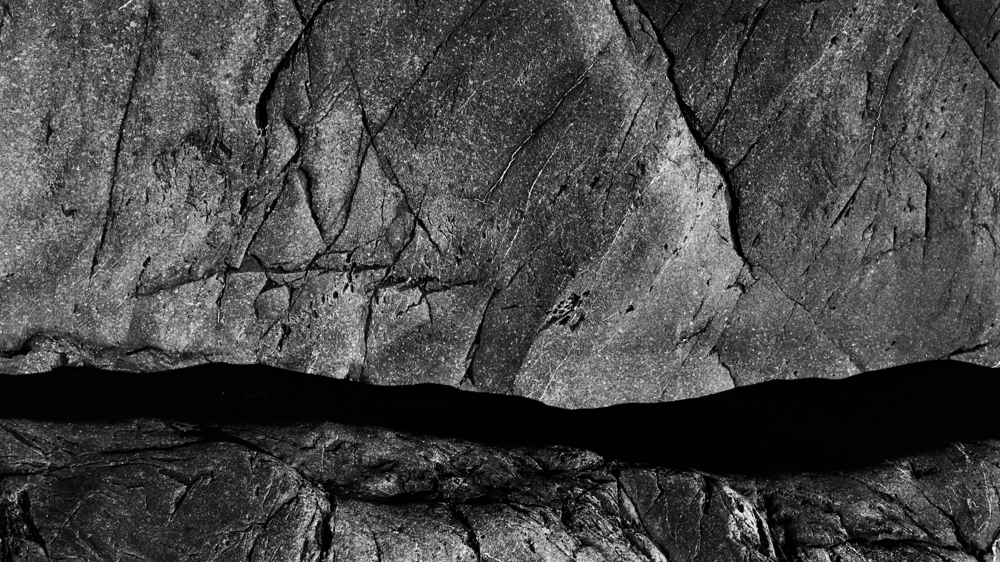
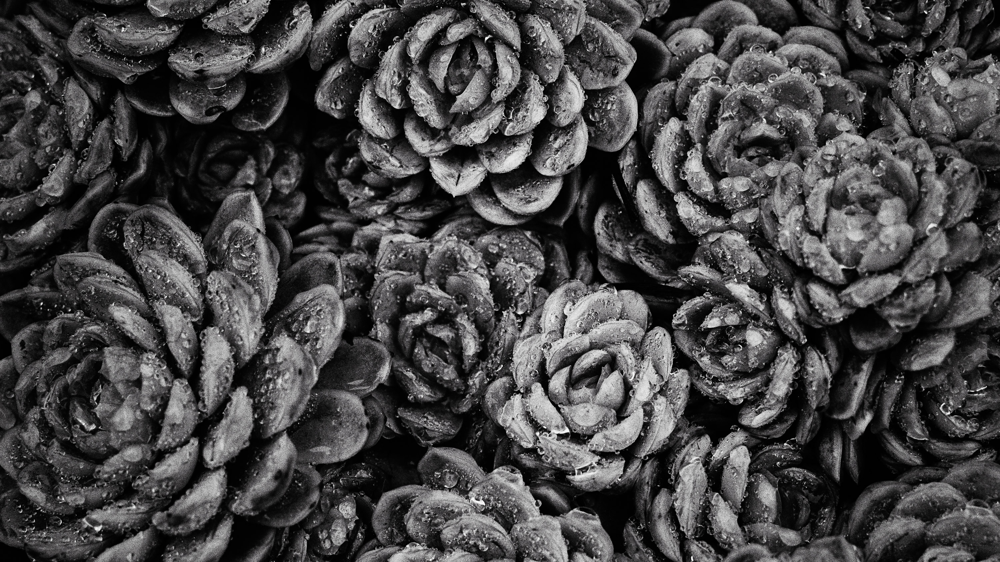
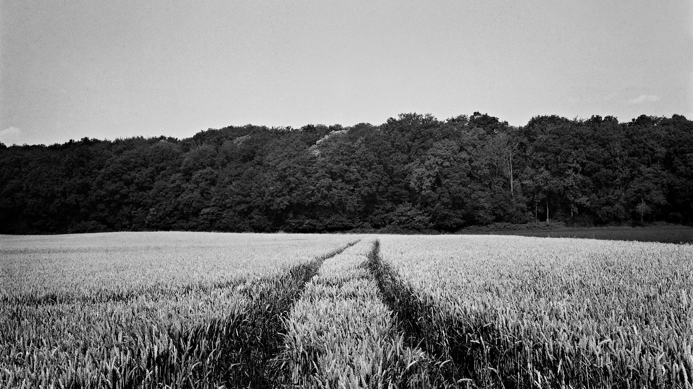

emmanuel pineau
video
new
photography
about
contact
blog
☰
News, film tests, behind the scenes
Blog
A simple life
Analog

Solid as a rock
Analog

8 Reasons to Try Kentmere Pan 100
Analog

5 Reasons to use Kodak Xtol
Analog